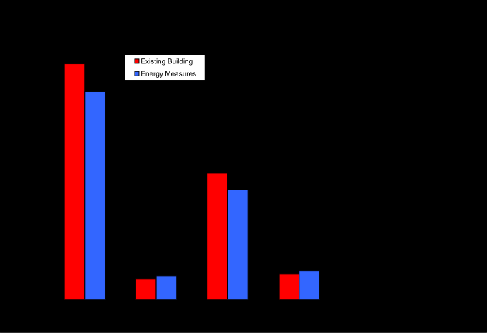

Special Modules/Reporting
Environmental Impacts
Typically when a new building technology is evaluated the energy performance of a baseline building is compared to the energy and life-cycle costs of alternatives to determine cost-effectiveness. But what if the lowest energy or life-cycle cost alternative is not the cleanest or lowest environmental impact? By calculating environmental impact, designers can compare alternatives not only in terms of their energy performance but also their environmental performance—working towards a more sustainable design (Liesen 1997; Stroot, Nemeth, and Fournier 1996). Environmental impacts are quantified, in part, by modeling the amount of emissions and in EnergyPlus this is done using the input objects “EnvironmentalImpactFactors,” “FuelFactors,” and “Output:EnvironmentalImpactFactors.”
Based on emissions factors entered by the user, EnergyPlus calculates the mass or volume of thirteen different pollutants: CO2 (carbon dioxide), CO (carbon monoxide), CH4 (methane), NOx (nitrogen oxides), N2O (nitrous oxide), SO2 (sulphur dioxide), PM (particulate matter), PM10 (particulate matter 10>PM10>2.5 microns), PM2.5 (particulate matter<2.5 microns), NH3 (ammonia), NMVOC (non-methane volatile organic compounds), Hg (mercury), and Pb (lead) as well as water consumed through evaporation in thermo- and hydro-electric generation and high- and low-level nuclear waste from nuclear electricity generation for on- and off-site energy production. Note that while these comprise the largest proportion of pollutants, more than one hundred other pollutants are emitted from fossil fuel combustion or electricity generation. Much of the information compiled here for fossil fuel combustion comes from AP-42 Compilation of Air Pollutant Emission Factors (EPA 1998a, 1998b, 1996). For more information on pollutants, see the U.S. Environmental Protection Agency (EPA) Clearinghouse for Inventories & Emission Factors (www.epa.gov/ttn/chief/efinformation.html).
EnergyPlus models energy performance of on-site fossil fuels and purchased electricity (generated from a variety of fuels including natural gas, oil, gasoline, diesel, coal, hydroelectric, nuclear, wind, solar power, and biomass). The energy performance calculated by EnergyPlus is converted into a mass or volume of pollutants emitted. From a baseline building, alternative energy and pollution saving technologies can be explored, and the energy savings and pollution reduction can be calculated. Figure 341 and Figure 342 illustrate a comparison of two buildings simulated using Chicago weather data in EnergyPlus and the calculated pollutant levels (based on U.S. national average pollutants) (Crawley 2003).
To calculate the mass or volume of each pollutant, consumption is multiplied by an emissions factor for each fuel (natural gas, electricity, fuel oil, diesel, or coal). In future versions, users will be able to schedule how the emissions factors by time of day, month, season and year. For electricity, the mix of generation fuel sources—whether utility, state or regional—is used to adjust the emission factors. If a user has emissions factors specific to the building site and equipment, these can be entered directly. There are no default emissions factors.
Types of Pollutants
EPA categorizes pollutants as either Criteria Pollutants or Hazardous Pollutants. Criteria pollutants are the six substances for which EPA has set health-based standards, including carbon monoxide (CO), nitrogen oxides (NOx), sulfur dioxide (SO2), and particulate matter (PM10 and PM2.5), ozone (O3), and lead (Pb). Because ozone is created in atmospheric photochemical reactions of volatile organic compounds, ammonia, and other substances rather than direct building-related energy emissions, we do not calculated ozone emissions in EnergyPlus. But we do include ozone precursors: methane (CH4), non-methane volatile organic compounds (NMVOC), and ammonia (NH3). Hazardous pollutants are substances that are known or suspected to cause serious health problems such as cancer. We include typical hazardous substances associated with energy production and use including lead (Pb) and mercury (Hg). We also include CO2 (carbon dioxide) since it is largest greenhouse gas in terms of impact.

Figure 341. Example Annual Atmospheric Pollutants and Water Consumption

Figure 342. Example Annual Total Carbon Equivalent for Major Greenhouse Gases
Carbon Equivalent
The Intergovernmental Panel on Climate Change has studied the effects on the relative radiative forcing effects of various greenhouse gases. This effect, called Global Warming Potential (GWP), is described in terms of the Carbon Equivalent of a particular greenhouse gas. This equivalent is based on a factor of 1.0 for carbon. This group of gases includes carbon dioxide (CO2), carbon monoxide, nitrous oxide, methane, halocarbon emission, hydrofluorocarbons (HFC), perfluorocarbons (PFC), and chlorofluorocarbons (CFC). For building energy use, the main gases of concern are carbon dioxide, carbon monoxide, methane, and nitrous oxide. Although carbon monoxide has a relatively short life, CO emissions into the atmosphere may have a significant impact on climate forcing due to chemical impact on CH4 lifetime, and tropospheric O3 and CO2 photochemical production normally reacts to produce carbon dioxide, but it can’t be ignored since it is produced in incomplete combustion and the carbon remains to interact as CO2. Yet there is no agreement on its carbon equivalent (IPCC 2001). The carbon equivalent of carbon dioxide, methane, and nitrous oxide are calculated and then multiplied by their GWP on a 100 year time frame. The Carbon Equivalents of the following gases have been determined and used in the program are shown in the following table.
Table 93. Carbon Equivalents (IPCC 2001)
| Gas | Carbon Equivalent |
| NOx | 80.7272 |
| CH4 | 6.2727 |
| CO2 | 0.2727 |
The resulting carbon equivalents by fuel type are shown in the output of the program along with the individual gas pollutants.
Fossil Fuel Emissions Factors
Emission factors for on-site fossil fuel consumption are based on Section 1.4 Natural Gas Combustion in EPA (1998a) Table 94 shows the greenhouse gas and precursors and criteria pollutant emissions factors for natural gas. Similar emissions factors are shown for residual fuel oil (No. 4 and No. 6 fuel oil) [Table 95], distillates (No. 1 and No. 2 fuel oil) [Table 96], residential oil furnace [Table 97], LPG (butane and propane) [Table 98], gasoline and diesel [Table 99], and coal [Table 100] in the indicated tables. Note that a zero for a pollutant in the table may mean that no data were available, not that there are no emissions of that pollutant.
Table 94. Emission Factors for Natural Gas
| Pollutant | Emission Factora (g/MJ) |
| Carbon Dioxide (CO2) | 50.23439 |
| Carbon Monoxide (CO) | 3.51641E-02 |
| Methane (CH4) | 9.62826E-04 |
| Nitrogen Oxides (NOX) | 4.18620E-02 |
| Nitrous Oxide (N2O)b | 9.20964E-04 |
| Sulphur Dioxide (SO2)c | 2.51172E-04 |
| Particulate Matter (PM)d | 3.18151E-03 |
| Particulate Matter (PM10)d | 2.38613E-03 |
| Particulate Matter (PM2.5)d | 7.95378E-04 |
| Ammonia (NH3) | 0e |
| Volatile Organic Compounds (NMVOC) | 2.30241E-03 |
| Mercury (Hg) | 1.08841E-07 |
| Lead (Pb) | 2.09310E-07 |
a Based on data from Tables 1.4-1, 1.4.-2 and 1.4.4 in EPA (1998a), Natural gas heat value of 1027 Btu/ft3 based on data for 2003 in Table A-4 in DOE (2004)
b Values shown are for uncontrolled burner. For controlled-low NOX burner, use 0.64 lb/106 ft3, 0.000627 lb/MMBtu, 0.0002679 g/MJ
c Based on 100% conversion of fuel sulfur to SO2. Assumes sulfur content is natural gas of 2,000 grains/106 ft3. The SO2 emission factor can be converted to other natural gas sulfur contents by multiplying the SO2 emission factor by the ratio of the site-specific sulfur content (grains/106 ft3) to 2,000 grains/106 ft3.
d PM is the sum of all particulate matter including PM10 and PM2.5. PM10 and PM2.5 stand for particles smaller than 10 and 2.5 microns, respectively.
e No data.
Table 95. Emission Factors for Residual Fuel Oil (No. 4 and No. 6 Fuel Oil)
Pollutant
No. 6 Fuel Oil
No. 4 Fuel Oil
Emission Factora (g/MJ)
Emission Factora (g/MJ)
Carbon Dioxide (CO2)
76.77128
76.77128
Carbon Monoxide (CO)
1.53543E-02
1.53543E-02
Methane (CH4)
1.45865E-03
6.63304E-04
Nitrogen Oxides (NOX)
1.68897E-01
6.14170E-02
Nitrous Oxide (N2O)
3.37794E-04
3.37794E-04
Sulphur Dioxide (SO2)b
4.82124E-01
4.60628E-01
Particulate Matter (PM)c
2.56109E-02
2.14960E-02
Particulate Matter (PM10)c
1.58763E-02
1.58763E-02
Particulate Matter (PM2.5)c
5.89603E-03
5.89603E-03
Ammonia (NH3)
0d
0d
Volatile Organic Compounds (NMVOC)
3.47006E-03
1.04409E-03
Mercury (Hg)
3.47006E-06
3.47006E-06
Lead (Pb)
4.63699E-06
4.63699E-06
a Based on data from Tables 1.3-1, 1.3-3, 1.3-8, 1.3-10, and 1.3-12 in EPA (1998b).
b Based on 100% conversion of fuel sulfur to SO2. Assumes 1% sulfur content. The SO2 emission factor in this table can be converted to other natural gas sulfur contents by multiplying the SO2 emission factor by percentage sulfur content.
c PM is the sum of all particulate matter including PM10 and PM2.5. PM10 and PM2.5 stand for particles smaller than 10 and 2.5 microns, respectively.
d No Data.
Table 96. Emission Factors for Distillates (No. 1 and No. 2 Fuel Oil)
Pollutant
No. 1 Fuel Oil
No. 2 Fuel Oil
Emission Factora (g/MJ)
Emission Factora (g/MJ)
Carbon Dioxide (CO2)
66.02330
68.47998
Carbon Monoxide (CO)
1.53543E-02
1.53543E-02
Methane (CH4)
6.63304E-04
6.63304E-04
Nitrogen Oxides (NOX)
6.14170E-02
7.37004E-02
Nitrous Oxide (N2O)
3.37794E-04
3.37794E-04
Sulphur Dioxide (SO2)b
4.36061E-01
4.82124E-01
Particulate Matter (PM)c
6.14170E-03
6.14170E-03
Particulate Matter (PM10)c
3.31652E-03
3.31652E-03
Particulate Matter (PM2.5)c
2.54881E-03
2.54881E-03
Ammonia (NH3)
0d
0d
Volatile Organic Compounds (NMVOC)
1.04409E-03
1.04409E-03
Mercury (Hg)
3.47006E-06
3.47006E-06
Lead (Pb)
4.63699E-06
4.63699E-06
a Based on data from Tables 1.3-1, 1.3-3, 1.3-8, 1.3-10, and 1.3-12 in EPA (1998b).
b Based on 100% conversion of fuel sulfur to SO2. Assumes 1% sulfur content. The SO2 emission factor in this table can be converted to other natural gas sulfur contents by multiplying the SO2 emission factor by percentage sulfur content.
c PM is the sum of all particulate matter including PM10 and PM2.5. PM10 and PM2.5 stand for particles smaller than 10 and 2.5 microns, respectively.
d No data.
Table 97. Emission Factors for Residential Oil Furnace
| Pollutant | Emission Factora (g/MJ) |
| Carbon Dioxide (CO2) | 68.48237 |
| Carbon Monoxide (CO) | 1.53543E-02 |
| Methane (CH4) | 5.46612E-02 |
| Nitrogen Oxides (NOX) | 5.52753E-02 |
| Nitrous Oxide (N2O) | 1.53543E-04 |
| Sulphur Dioxide (SO2)b | 4.36061E-01 |
| Particulate Matter (PM)c | 2.14960E-02 |
| Particulate Matter (PM10)c | 1.58763E-02 |
| Particulate Matter (PM2.5)c | 5.89603E-03 |
| Ammonia (NH3) | 0d |
| Volatile Organic Compounds (NMVOC) | 2.18952E-03 |
| Mercury (Hg) | 3.47006E-06 |
| Lead (Pb) | 4.63699E-06 |
a Based on data from Tables 1.3-1, 1.3-3, 1.3-8, 1.3-10, and 1.3-12 in EPA (1998b).
b Based on 100% conversion of fuel sulfur to SO2. Assumes 1% sulfur content. The SO2 emission factor in this table can be converted to other natural gas sulfur contents by multiplying the SO2 emission factor by percentage sulfur content.
c PM is the sum of all particulate matter including PM10 and PM2.5. PM10 and PM2.5 stand for particles smaller than 10 and 2.5 microns, respectively.
d No data.
Table 98. Emission Factors for LPG (butane and propane)
Pollutant
LPG (butane)
Propane
Emission Factora (g/MJ)
Emission Factora (g/MJ)
Carbon Dioxide (CO2)
66.02330
68.47998
Carbon Monoxide (CO)
1.53543E-02
1.53543E-02
Methane (CH4)
6.63304E-04
6.63304E-04
Nitrogen Oxides (NOX)
6.14170E-02
7.37004E-02
Nitrous Oxide (N2O)
3.37794E-04
3.37794E-04
Sulphur Dioxide (SO2)b
4.36061E-01
4.82124E-01
Particulate Matter (PM)c
6.14170E-03
6.14170E-03
Particulate Matter (PM10)c
3.31652E-03
3.31652E-03
Particulate Matter (PM2.5)c
2.54881E-03
2.54881E-03
Ammonia (NH3)
0d
0d
Volatile Organic Compounds (NMVOC)
1.04409E-03
1.04409E-03
Mercury (Hg)
3.47006E-06
3.47006E-06
Lead (Pb)
4.63699E-06
4.63699E-06
a Based on data from Table # 1.5-1 in EPA (1996), Higher Heating value of 1.02 MMBtu/gal for butane and 0.915 MMBtu/gal for propane based on data in EPA (1996).
b Based on 100% conversion of fuel sulfur to SO2. Assumes sulphur content is 0.18 gr/100 ft3.The SO2 emission factor can be converted to other LPG sulphur contents by multiplying the SO2 emission factor by the ratio of the site-specific sulphur content gr/100 ft3 to 0.18 gr/100 ft3.
c PM is the sum of all particulate matter including PM10 and PM2.5. PM10 and PM2.5 stand for particles smaller than 10 and 2.5 microns, respectively.
d No data.
Table 99. Emission Factors for Gasoline and Diesel
Pollutant
Gasoline
Diesel
Emission Factora (g/MJ)
Emission Factora (g/MJ)
Carbon Dioxide (CO2)
66.20808
70.50731
Carbon Monoxide (CO)
2.69561E+01
4.08426E-01
Methane (CH4)
0c
0c
Nitrogen Oxides (NOX)
7.00774E-01
1.89596E+00
Nitrous Oxide (N2O)
0c
0c
Sulphur Dioxide (SO2)
3.61135E-02
1.24678E-01
Particulate Matter (PM)b
0c
0c
Particulate Matter (PM10)b
4.29923E-02
1.33276E-01
Particulate Matter (PM2.5)b
0c
0c
Ammonia (NH3)
0c
0c
Volatile Organic Compounds (NMVOC)
9.02837E-01
1.50473E-01
Mercury (Hg)
0c
0c
Lead (Pb)
0c
0c
a Based on data from Table # 3.3-1 in EPA (1996), Diesel higher heating value of 19,300 Btu/lb, and gasoline higher heating value of 20,300 Btu/lb based on data in EPA (1996).
b PM is the sum of all particulate matter including PM10 and PM2.5. PM10 and PM2.5 stand for particles smaller than 10 and 2.5 microns, respectively.
c No data.
Table 100. Emission Factors for Coal
Pollutant
Bituminous
Anthracite
Lignite
Emission Factora (g/MJ)
Emission Factorb (g/MJ)
Emission Factorc (g/MJ)
Carbon Dioxide (CO2)
91.11052
99.26669
152.12646
Carbon Monoxide (CO)
8.26774E-03
1.04859E-02
8.26774E-03
Methane (CH4)
6.61419E-04
0f
0f
Nitrogen Oxides (NOX)
1.98426E-01
3.14578E-01
2.34804E-01
Nitrous Oxide (N2O)
4.96065E-04
0f
0f
Sulphur Dioxide (SO2)d
6.28348E-01
6.81585E-01
9.92129E-01
Particulate Matter (PM)e
1.65355E-01
1.74765E-01
2.18268E-01
Particulate Matter (PM10)e
3.80316E-02
4.01960E-02
7.60632E-02
Particulate Matter (PM2.5)e
9.92129E-03
1.04859E-02
2.18268E-02
Ammonia (NH3)
0f
0f
0f
Volatile Organic Compounds (NMVOC)
9.92129E-04
2.14961E-02
1.32284E-03
Mercury (Hg)
6.94490E-06
2.27195E-06
2.74489E-06
Lead (Pb)
1.37245E-06
1.55541E-04
1.38898E-05
a Based on data on pulverized coal from Tables 1.1-3, 1.1-6, 1.1-18, 1.1-19 in EPA (1998a), Coal average higher heating value of 26.0 MMBtu/ton based on EPA (1998a). b Based on data on pulverized coal from Tables 1.2-1, 1.2-2, 1.2-3, 1.2-4, 1.2-7 in EPA (1996), Coal average higher heating value of 24.6 MMBtu/ton based on EPA (1996). c Based on data on pulverized coal from Tables 1.7-1, 1.7-3, 1.7-7, 1.7-14 in EPA (1998b), Coal average higher heating value of 13.0 MMBtu/ton based on EPA (1998b). d Based on 100% conversion of fuel sulfur to SO2. Assumes 1% sulfur content. The SO2 emission factor in this table can be converted to other natural gas sulfur contents by multiplying the SO2 emission factor by percentage sulfur content. e PM is the sum of all particulate matter including PM10 and PM2.5. PM10 and PM2.5 are particles smaller than 10 and 2.5 microns, respectively. Expressed in terms of coal ash content, assumes 1% ash content. Multiply weight % ash content of coal (as fired) by the value. f No data.
Off-Site Electricity Generation Emissions
While estimating emissions from on-site fossil fuel combustion can be fairly straight-forward, emissions from off-site electricity is more challenging. How the electricity is generated, i.e., from gas, oil, coal, nuclear, renewable sources (wind, PV) or hydroelectric, and the mix of generation determines the resulting level of emissions. While data are available at utility and even power plant level (from the sources cited), data are shown here for United States national- and state-level average emissions from electricity generation. Table 101 provides average greenhouse gas and precursors and criteria pollutant emissions factors for the entire United States from electricity generation. Table 102 provides average electricity emissions factors by state, for greenhouse gas and precursors, and Table 103 for criteria pollutant emission factors. These two tables also include a ratio of heat input to electric output (efficiency of electricity generation) including distribution and transmission losses to allow calculation of source energy.
As mentioned in the introduction to this section, EnergyPlus also calculates water consumed through evaporation in thermo-electric and hydro-electric generation. Torcellini, Long, and Judkoff (2004) provide data on average water consumption by generator type by state. These data are summarized in units suitable for EnergyPlus in Table 101, for national and state average water consumption for thermal-electric, hydro-electric, and Table 102 for weighted total electricity generation.
Table 101. United States National Average Emission Factors for Electricity Generation
| Efficiency Ratio (J/J) | |
| Ratio of Heat Input to Electricity Outputa | 2.253 |
| Pollutant | Emission Factor (g/MJ) |
| Carbon Dioxide (CO2)b | 168.333168 |
| Carbon Monoxide (CO)c | 4.20616E-02 |
| Methane (CH4)b | 1.39858E-03 |
| Nitrogen Oxides (NOX)a | 4.10753E-01 |
| Nitrous Oxide (N2O)b | 2.41916E-03 |
| Sulphur Dioxide (SO2)a | 8.65731E-01 |
| Particulate Matter (PM)c,d | 2.95827E-02 |
| Particulate Matter (PM10)c,d | 1.80450E-02 |
| Particulate Matter (PM2.5)c,d | 1.15377E-02 |
| Ammonia (NH3)c | 1.10837E-03 |
| Volatile Organic Compounds (NMVOC)a | 3.72332E-03 |
| Mercury (Hg)c | 3.36414E-06 |
| Lead (Pb) | 0e |
a Data based on 1999 data from eGRID version 2.01 (EPA 2003a). b Data based on 1998-2000 average data in DOE (2002). c Data based on tier emissions report for criteria air pollutants in EPA (2003b). d PM is the sum of all particulate matter including PM10 and PM2.5. PM10 and PM2.5 stand for particles smaller than 10 and 2.5 microns, respectively. e No data.
Table 102. U. S. State Average Greenhouse Gas Emission Factors for Electricity Generation, in g/MJ
Ratio of Heat Input to Electric Output
Carbon Dioxide (CO2)b
Carbon Monoxide (CO)c
Methane (CH4)b
Nitrogen Oxides (NOX)a
Nitrous Oxide (N2O)b
Sulphur Dioxide (SO2)a
Alabama
2.230
165.30922
1.45087E+03
1.72617E-03
4.02311E-01
2.80975E-03
1.13940E+00
Alaska
2.734
173.87708
3.71694E+02
8.56786E-04
7.29024E-01
1.12138E-03
2.38136E-01
Arizona
1.694
132.29777
8.26924E+02
8.56786E-04
2.74423E-01
1.94037E-03
2.27552E-01
Arkansas
2.207
162.03327
6.41833E+02
1.57497E-03
2.87149E-01
2.55776E-03
4.24991E-01
California
1.422
76.35472
2.91370E+03
8.44186E-04
6.56449E-02
4.66192E-04
3.04915E-02
Colorado
3.101
242.67192
1.51197E+03
1.60017E-03
4.74004E-01
3.64134E-03
5.83874E-01
Connecticut
1.720
118.69000
3.21421E+02
2.19236E-03
1.81563E-01
1.51197E-03
3.78750E-01
Delaware
2.736
230.57612
1.31290E+02
1.54977E-03
4.12517E-01
2.86015E-03
1.10866E+00
District of Columbia
4.844
172.11310
8.94585E+00
1.48677E-03
7.29528E-01
2.59556E-03
1.62487E+00
Florida
2.694
175.64105
6.12954E+03
1.88997E-03
4.73122E-01
2.26796E-03
1.00584E+00
Georgia
2.119
172.11310
1.05889E+03
1.62537E-03
4.00043E-01
2.84755E-03
1.11974E+00
Hawaii
2.950
209.40848
1.17682E+02
2.69635E-03
7.27512E-01
2.30576E-03
5.44437E-01
Idaho
0.213
3.52794
0
1.00798E-03
1.07098E-02
4.15793E-04
1.05838E-02
Illinois
1.694
146.66153
1.85292E+03
1.03318E-03
4.41749E-01
2.26796E-03
1.11811E+00
Indiana
3.281
261.57160
2.14058E+03
1.80177E-03
7.30284E-01
4.06973E-03
1.88846E+00
Iowa
3.033
237.12801
7.57877E+02
1.73877E-03
5.61447E-01
3.75474E-03
1.04566E+00
Kansas
2.826
212.18043
8.65983E+02
1.41118E-03
5.58801E-01
3.20035E-03
7.06596E-01
Kentucky
3.234
253.00374
1.50857E+03
1.76397E-03
8.41036E-01
4.04453E-03
1.79257E+00
Lousiana
2.624
148.42550
1.68116E+04
1.18438E-03
3.41958E-01
1.41118E-03
5.05755E-01
Maine
2.191
107.35019
4.92778E+02
7.11888E-03
1.79547E-01
3.40194E-03
4.04327E-01
Maryland
2.277
172.11310
4.89502E+02
1.48677E-03
5.37759E-01
2.59556E-03
1.38837E+00
Massachusetts
2.729
161.02529
7.89125E+02
2.19236E-03
2.89165E-01
2.00337E-03
8.01347E-01
Michigan
2.616
199.07665
1.69354E+03
1.83957E-03
4.91770E-01
3.14995E-03
9.76988E-01
Minnesota
2.331
163.04126
6.96264E+02
1.66317E-03
5.02354E-01
2.07897E-03
5.06889E-01
Mississippi
2.404
231.83610
2.17976E+03
1.58757E-03
4.66570E-01
3.62874E-03
8.98239E-01
Missouri
2.857
192.02077
1.29753E+03
1.97817E-03
6.41707E-01
3.11215E-03
9.07059E-01
Montana
1.936
180.68096
4.13147E+02
1.36078E-03
3.58212E-01
2.86015E-03
2.01219E-01
Nebraska
2.195
176.39703
4.68208E+02
1.19698E-03
3.94121E-01
2.75935E-03
5.29065E-01
Nevada
2.615
191.26478
3.82278E+02
1.13398E-03
4.01807E-01
2.45696E-03
4.02815E-01
New Hampshire
1.394
85.93055
2.63588E+02
2.16716E-03
2.03109E-01
1.77657E-03
8.71275E-01
New Jersey
1.451
88.95450
2.27250E+03
9.70184E-04
1.76649E-01
9.95383E-04
2.31206E-01
New Mexico
3.307
254.26372
8.56408E+02
1.65057E-03
6.57583E-01
3.72954E-03
5.70140E-01
New York
1.808
108.10618
1.93835E+03
1.02058E-03
1.69089E-01
1.12138E-03
4.68082E-01
North Carolina
1.969
156.48937
1.10286E+03
1.32298E-03
4.68712E-01
2.55776E-03
1.00131E+00
North Dakota
3.244
282.48725
9.01389E+02
1.85217E-03
6.44731E-01
4.27133E-03
1.52697E+00
Ohio
2.736
226.79619
1.58757E+03
1.63797E-03
7.67579E-01
3.62874E-03
2.33562E+00
Oklahoma
3.024
216.96835
1.67262E+03
1.38598E-03
5.11425E-01
2.80975E-03
5.11047E-01
Oregon
0.526
35.53140
1.86855E+02
4.15793E-04
5.26671E-02
4.28393E-04
7.50947E-02
Pennsylvania
1.827
159.26132
1.85885E+03
1.34818E-03
3.29232E-01
2.55776E-03
1.25834E+00
Rhode Island
2.561
132.54977
1.67955E+02
8.56786E-04
6.21170E-02
5.92190E-04
4.53592E-03
South Carolina
1.300
105.08223
8.38642E+02
1.14658E-03
2.54264E-01
1.82697E-03
6.04790E-01
South Dakota
1.192
100.54631
9.79004E+01
6.67789E-04
5.44941E-01
1.52457E-03
5.81354E-01
Tennessee
1.902
163.29325
9.09579E+02
1.32298E-03
5.10165E-01
2.67116E-03
1.18123E+00
Texas
2.749
184.46090
9.63405E+03
9.70184E-04
3.27720E-01
1.83957E-03
4.90888E-01
Utah
3.095
243.67990
5.13063E+02
1.68837E-03
5.26545E-01
3.88073E-03
2.13314E-01
Vermont
0.306
3.52794
1.38472E+02
1.20958E-03
1.94037E-02
4.91392E-04
2.14196E-03
Virginia
1.924
146.66153
9.12729E+02
1.72617E-03
3.65016E-01
2.41916E-03
7.86857E-01
Washington
0.414
30.99548
4.29653E+02
4.66192E-04
5.30451E-02
5.03992E-04
1.90383E-01
West Virginia
2.917
248.97181
1.27938E+03
1.72617E-03
7.77659E-01
3.98153E-03
1.86918E+00
Wisconsin
2.680
206.88852
1.00471E+03
1.73877E-03
4.97440E-01
3.27594E-03
9.25076E-01
Wyoming
3.534
270.39145
9.01389E+02
1.85217E-03
5.59431E-01
4.25873E-03
5.78708E-01
a Data based on 1999 data from eGRID version 2.01 (EPA 2003a).
b Data based on 1998-2000 average data in DOE (2002).
c Data based on tier emissions report for criteria air pollutants in EPA (2003b).
d PM is the sum of all particulate matter including PM10 and PM2.5. PM10 and PM2.5 stand for particles smaller than 10 and 2.5 microns, respectively.
e No data.
Table 103. U. S. State Average Criteria Pollutant Emission Factors for Electricity Generation, in g/MJ
| Particulate Matter (PM)cd | Particulate Matter (PM10)cd | Particulate Matter (PM2.5)cd | Ammonia (NH3)c | Volatile Organic Compounds (NMVOC)a | Mercury (Hg)c | Lead (Pb)e | |
| Alabama | 7.91048E-03 | 7.86328E-03 | 4.72023E-05 | 3.55049E-05 | 4.66784E-03 | 5.14071E-06 | 0e |
| Alaska | 8.96502E-03 | 8.85977E-03 | 1.05247E-04 | 6.51454E-06 | 2.82297E-03 | 3.27594E-07 | 0e |
| Arizona | 1.70555E-02 | 1.69322E-02 | 1.23202E-04 | 1.80226E-04 | 2.27385E-03 | 1.88997E-06 | 0e |
| Arkansas | 9.27803E-03 | 9.19307E-03 | 8.49561E-05 | 4.59383E-04 | 3.46429E-03 | 2.73415E-06 | 0e |
| California | 7.16813E-03 | 7.07819E-03 | 8.99402E-05 | 4.02651E-03 | 2.62453E-03 | 1.38598E-07 | 0e |
| Colorado | 7.29822E-03 | 7.23699E-03 | 6.12291E-05 | 9.56430E-05 | 4.36770E-03 | 1.62537E-06 | 0e |
| Connecticut | 1.22734E-02 | 1.21694E-02 | 1.04033E-04 | 2.22944E-03 | 3.93896E-03 | 1.18438E-06 | 0e |
| Delaware | 1.39283E-02 | 1.38287E-02 | 9.96131E-05 | 1.54469E-03 | 4.74441E-03 | 3.62874E-06 | 0e |
| District of Columbia | 2.88269E-02 | 2.84861E-02 | 3.40760E-04 | 8.76496E-03 | 2.30080E-02 | 0 | 0e |
| Florida | 4.33040E-02 | 4.29055E-02 | 3.98460E-04 | 1.58386E-03 | 3.39110E-03 | 1.71357E-06 | 0e |
| Georgia | 2.05237E-02 | 2.03865E-02 | 1.37175E-04 | 7.51637E-05 | 2.16686E-03 | 3.20035E-06 | 0e |
| Hawaii | 5.97339E-03 | 5.90409E-03 | 6.92999E-05 | 3.55697E-03 | 7.01715E-03 | 1.77657E-06 | 0e |
| Idaho | 0 | 0 | 0 | 0 | 0 | 0 | 0 |
| Illinois | 1.53276E-01 | 1.52156E-01 | 1.12047E-03 | 5.93583E-03 | 2.77818E-02 | 4.62412E-06 | 0e |
| Indiana | 2.18862E-02 | 2.17008E-02 | 1.85453E-04 | 5.75861E-04 | 4.87283E-03 | 4.86352E-06 | 0e |
| Iowa | 2.34564E-02 | 2.32698E-02 | 1.86674E-04 | 9.09228E-05 | 4.78644E-03 | 6.19910E-06 | 0e |
| Kansas | 2.41783E-02 | 2.39535E-02 | 2.24799E-04 | 4.19292E-04 | 5.39089E-03 | 4.93912E-06 | 0e |
| Kentucky | 1.69397E-02 | 1.68139E-02 | 1.25825E-04 | 4.35029E-05 | 3.80922E-03 | 4.71232E-06 | 0e |
| Lousiana | 1.79917E-02 | 1.77843E-02 | 2.07304E-04 | 1.66720E-03 | 1.02357E-02 | 1.41118E-06 | 0e |
| Maine | 3.36399E-03 | 3.34131E-03 | 2.26813E-05 | 1.55132E-03 | 9.62614E-03 | 4.53592E-07 | 0e |
| Maryland | 2.13382E-02 | 2.12038E-02 | 1.34391E-04 | 7.21581E-04 | 2.78881E-03 | 4.88872E-06 | 0e |
| Mass-achusetts | 8.85244E-03 | 8.76617E-03 | 8.62772E-05 | 1.70282E-03 | 3.49171E-03 | 1.88997E-06 | 0e |
| Michigan | 9.08755E-03 | 9.00520E-03 | 8.23449E-05 | 2.22140E-04 | 2.79017E-03 | 3.67914E-06 | 0e |
| Minnesota | 4.04781E-02 | 4.01455E-02 | 3.32617E-04 | 6.74889E-05 | 4.13240E-03 | 3.30114E-06 | 0e |
| Mississippi | 5.44446E-02 | 5.37910E-02 | 6.53601E-04 | 4.06289E-02 | 1.54329E-02 | 2.45696E-06 | 0e |
| Missouri | 1.25537E-02 | 1.24368E-02 | 1.16929E-04 | 6.48638E-05 | 4.98085E-03 | 4.67452E-06 | 0e |
| Montana | 3.67504E-03 | 3.64126E-03 | 3.37798E-05 | 4.01020E-05 | 3.14400E-03 | 3.77994E-06 | 0e |
| Nebraska | 1.33751E-02 | 1.32829E-02 | 9.21636E-05 | 6.90470E-05 | 5.23031E-03 | 3.59094E-06 | 0e |
| Nevada | 2.09146E-02 | 2.07657E-02 | 1.48886E-04 | 3.79659E-04 | 3.33440E-03 | 1.36078E-06 | 0e |
| New Hampshire | 3.09503E-02 | 3.06487E-02 | 3.01568E-04 | 7.16019E-04 | 2.45937E-03 | 3.40194E-07 | 0e |
| New Jersey | 3.45712E-02 | 3.41460E-02 | 4.25200E-04 | 1.24216E-04 | 1.52830E-02 | 1.28518E-06 | 0e |
| New Mexico | 5.20754E-02 | 5.16748E-02 | 4.00653E-04 | 4.41665E-04 | 5.12951E-03 | 8.41666E-06 | 0e |
| New York | 5.35802E-03 | 5.31301E-03 | 4.50068E-05 | 2.22325E-03 | 4.26008E-03 | 1.33558E-06 | 0e |
| North Carolina | 3.40955E-02 | 3.38325E-02 | 2.62976E-04 | 3.00504E-05 | 1.73434E-03 | 3.33894E-06 | 0e |
| North Dakota | 5.17162E-02 | 5.13979E-02 | 3.18277E-04 | 6.41672E-05 | 6.88995E-03 | 8.71905E-06 | 0e |
| Ohio | 1.38722E-02 | 1.37957E-02 | 7.64501E-05 | 1.11541E-04 | 2.59201E-03 | 6.24949E-06 | 0e |
| Oklahoma | 1.83971E-02 | 1.82479E-02 | 1.49160E-04 | 9.73713E-04 | 4.68484E-03 | 3.88073E-06 | 0e |
| Oregon | 3.47911E-03 | 3.46199E-03 | 1.71186E-05 | 4.43277E-06 | 5.31933E-04 | 3.77994E-07 | 0e |
| Pennsylvania | 2.21604E-02 | 2.20060E-02 | 1.54356E-04 | 1.47657E-04 | 1.51542E-03 | 6.56449E-06 | 0e |
| Rhode Island | 1.03973E-03 | 1.02744E-03 | 1.22906E-05 | 0 | 2.25247E-03 | 0 | 0e |
| South Carolina | 2.45530E-02 | 2.43803E-02 | 1.72632E-04 | 2.51344E-05 | 1.16735E-03 | 1.54977E-06 | 0e |
| South Dakota | 4.67825E-03 | 4.63562E-03 | 4.26239E-05 | 8.82976E-05 | 4.63562E-03 | 1.22218E-06 | 0e |
| Tennessee | 2.51650E-02 | 2.48944E-02 | 2.70575E-04 | 2.70034E-05 | 2.88396E-03 | 2.98615E-06 | 0e |
| Texas | 1.73147E-02 | 1.71765E-02 | 1.38283E-04 | 1.26310E-03 | 4.32150E-03 | 3.52794E-06 | 0e |
| Utah | 1.47314E-02 | 1.46364E-02 | 9.50155E-05 | 9.59315E-05 | 2.48737E-03 | 9.70184E-07 | 0e |
| Vermont | 1.16247E-03 | 1.14873E-03 | 1.37415E-05 | 1.80704E-05 | 2.12073E-03 | 0 | 0e |
| Virginia | 1.22315E-02 | 1.21362E-02 | 9.53635E-05 | 2.93259E-04 | 2.50975E-03 | 2.21756E-06 | 0e |
| Washington | 5.37627E-04 | 5.32210E-04 | 5.41708E-06 | 6.46409E-06 | 6.87348E-04 | 5.92190E-07 | 0e |
| West Virginia | 2.39677E-03 | 2.38177E-03 | 1.50018E-05 | 4.25792E-05 | 3.09497E-03 | 6.55189E-06 | 0e |
| Wisconsin | 7.34187E-03 | 7.28252E-03 | 5.93472E-05 | 6.45613E-05 | 4.61829E-03 | 4.83832E-06 | 0e |
| Wyoming | 5.08215E-02 | 5.06042E-02 | 2.17349E-04 | 5.19787E-05 | 4.78782E-03 | 5.27931E-06 | 0e |
Table 104. United States National Average Water Consumption Factorsa
Thermoelectric Generation
Hydroelectric Generation
Weighted Total Water Consumption
L/MJ
Percent of Total Generation
L/MJ
Percent of Total Generation
L/MJ
United States
0.4960
89.4%
19.2095
8.6%
2.1007
a Based on data from Torcellini, Long, and Judkoff (2004).
Table 105. U.S. State Average Water Consumption Factors for Electricity Generationa
Thermoelectric Generation
Hydroelectric Generation
Weighted Total Water Consumption
State
L/MJ
Percent of Total Generation
L/MJ
Percent of Total Generation
L/MJ
Alabama
0.1503
89.8%
38.9053
6.4%
2.6274
Alaska
0.3295
86.2%
--
13.8%
0.2839
Arizona
0.3313
88.3%
68.1928
11.7%
8.2533
Arkansas
0.3000
89.5%
--
5.7%
0.2684
California
0.0511
74.1%
21.9430
22.0%
4.8739
Colorado
0.5368
96.0%
18.8333
4.0%
1.2600
Connecticut
0.0860
90.8%
--
1.5%
0.0781
Delaware
0.0132
99.9%
--
0.0%
0.0132
District of Columbia
1.6959
100.0%
--
0.0%
1.6959
Florida
0.1506
95.7%
--
0.1%
0.1441
Georgia
0.6267
93.6%
49.8599
2.3%
1.7339
Hawaii
0.0440
92.4%
--
1.1%
0.0407
Idaho
0.0000
2.7%
8.9528
92.2%
8.2501
Illinois
1.1093
99.4%
--
0.1%
1.1032
Indiana
0.4350
99.6%
--
0.3%
0.4331
Iowa
0.1229
97.3%
--
2.5%
0.1196
Kansas
0.6099
100.0%
--
0.0%
0.6098
Kentucky
1.1521
97.2%
162.2884
2.8%
5.5990
Louisiana
1.6411
94.2%
--
0.9%
1.5461
Maine
0.3049
40.4%
--
28.7%
0.1231
Maryland
0.0343
95.3%
7.0617
2.7%
0.2259
Massachusetts
0.0000
92.4%
--
2.4%
0.0000
Michigan
0.5221
95.8%
--
1.4%
0.4999
Minnesota
0.4657
93.4%
--
2.4%
0.4351
Mississippi
0.4145
94.4%
--
0.0%
0.3912
Missouri
0.3213
97.4%
--
2.5%
0.3130
Montana
1.0051
55.8%
38.6619
44.1%
17.5997
Nebraska
0.2020
94.5%
2.2888
5.5%
0.3165
Nevada
0.5936
90.6%
77.1023
9.2%
7.6260
New Hampshire
0.1231
83.9%
--
8.6%
0.1033
New Jersey
0.0747
97.6%
--
0.0%
0.0729
New Mexico
0.6609
99.3%
71.5070
0.7%
1.1886
New York
0.8951
81.3%
5.8535
16.7%
1.7040
North Carolina
0.2445
95.5%
10.9089
3.1%
0.5751
North Dakota
0.3809
91.7%
60.7730
8.3%
5.3968
Ohio
0.9972
99.1%
--
0.3%
0.9884
Oklahoma
0.5378
93.7%
144.0133
5.8%
8.8254
Oregon
0.8633
18.4%
4.6351
80.7%
3.8990
Pennsylvania
0.5700
97.6%
--
1.0%
0.5563
Rhode Island
0.0000
98.2%
--
0.1%
0.0000
South Carolina
0.2754
97.2%
--
1.9%
0.2677
South Dakota
0.0143
36.7%
120.7558
63.2%
76.3811
Tennessee
0.0026
90.8%
45.5853
8.3%
3.7833
Texas
0.4595
99.0%
--
0.3%
0.4550
Utah
0.5959
96.6%
77.1150
3.4%
3.2090
Vermont
0.3642
71.5%
--
20.9%
0.2605
Virginia
0.0693
94.9%
--
0.9%
0.0657
Washington
0.3013
15.7%
3.3506
83.2%
2.8344
West Virginia
0.6180
99.0%
--
1.0%
0.6119
Wisconsin
0.5199
93.6%
--
3.3%
0.4867
Wyoming
0.5190
97.1%
144.0177
2.7%
4.3654
a Based on data from Torcellini, Long, and Judkoff (2004).
Other Energy-Related Pollutants and Sources of Other Information
EnergyPlus (with user entered-data) will also calculate high- and low-level nuclear waste from electricity generation. Few utilities now provide data on nuclear waste resulting from electricity generation and no US national or state-level data are yet available (this will be added as data become available). Two Illinois utilities regularly report nuclear waste in terms of pounds per kWh or MWh for high-level waste and cubic feet per kWh or MWh for low-level waste. For these two utilities, high level nuclear waste values range from 0.0042 to 0.01 lb/MWh (7000 to 16000 g/MJ); low-level nuclear waste ranges from 0.0001 to 0.0002 ft3/MWh (0.01 to 0.02 m3/MJ) depending on relative proportion of nuclear as compared with other electricity generation sources.
IEA (2003) contains carbon dioxide (CO2) emissions factors for electricity generation by country and region. Carbon dioxide (CO2) is responsible for over 60% of the anthropogenic greenhouse effect (UNEP 2002). Because only limited greenhouse gas emissions factors and data (other than CO2) is available for other countries, an interim method for estimating emission factors would be to compare the CO2 emission factor for the particular country from IEA (2003) and match it to the state with the closest CO2 emission factor in Table 102—using the other emissions factors for that state. Since the Kyoto Protocol (UNFCCC 1997) requires each country to report emissions of the major greenhouse gases [carbon dioxide (CO2), methane (CH4), and nitrous oxide (N2O)] as well as ozone-depleting substances [hydrofluorocarbons (HFC), perfluorocarbons (PFC), and sulphur hexafluoride (SF6)] and all energy consumption in their annual ‘national communication’, more complete emission factors for a larger number of countries should become available over the next few years. More information and other resources for calculating emissions factors are available in IPCC (2000, 1997).
References
Crawley, Drury B. 2003. “Impact of Climate Change on Buildings,” in Proceedings of the CIBSE/ASHRAE International Conference 2003, September 2003, Edinburgh, Scotland. London, England: CIBSE.
Intergovernmental Panel on Climate Change. 2001. Climate Change 2001: The Scientific Basis. Cambridge: Cambridge University Press.
Intergovernmental Panel on Climate Change. 2000. Good Practice Guidance and Uncertainty Management in National Greenhouse Gas Inventories, Paris, France: IPCC/OECD/IEA.
Intergovernmental Panel on Climate Change. 1997. Revised 1996 IPCC Guidelines for National Greenhouse Gas Inventories, J.T. Houghton, L.G. Meira Filho, B. Lim, K. Treanton, I. Mamaty, Y. Bonduki, D.J. Griggs and B.A. Callender (editors). Paris, France: IPCC/OECD/IEA.
International Energy Agency. 2003. CO2 Emissions from Fuel Combustion 1971-2001 (2003) -- 2003 Edition. Paris, France: IEA.
Liesen, Richard J. 1997. Atmospheric Pollution Prediction in a Building Energy Simulation Program, April 1997, BLAST Support Office, Department of Mechanical Engineering. Champaign, Illinois: University of Illinois.
Stroot, Peter J., Robert J. Nemeth, & Donald F. Fournier. 1996. Pollution Reduction Through Energy Conservation, REEP Model. Champaign, Illinois: U S Army Construction Engineering Research Laboratory.
Torcellini Paul A, Nicholas Long, and Ronald D. Judkoff. 2004. “Consumptive Water Use for U.S. Power Production,” in ASHRAE Transactions, Volume 110, Part 1. Atlanta, Georgia: ASHRAE.
United Nations Environment Programme. 2002. Climate Change Information Kit. Châtelaine, Switzerland: UNEP.
United Nations Framework Convention on Climate Change. 1997. Kyoto Protocol to the United Nations Framework Convention on Climate Change. Bonn, Germany: UNFCCC.
U.S. Department of Energy. 2004. Monthly Energy Review. Washington, DC: Energy Information Administration, U S Department of Energy.
U.S. Department of Energy. 2002. Updated State-level Greenhouse Gas Emission Coefficients for Electricity Generation 1998-2000. April 2002, Energy Information Administration, Office of Integrated Analysis and Forecasting, Energy Information Administration. Washington, DC: U.S. Department of Energy.
U.S. Environmental Protection Agency. 2003a. eGRID Emissions and Generation Resource Integrated Database, May 2003, Washington, DC: U.S. Environmental Protection Agency.
U.S. Environmental Protection Agency. 2003b. AirData, Tier Emissions Report - Criteria Air Pollutants, 1999 data, May 2003. Washington, DC: U.S. Environmental Protection Agency.
U.S. Environmental Protection Agency. 1998a. Compilation of Air Pollutant Emission Factors, AP-42, Fifth Edition, Volume I: Stationary Point and Area Sources, Chapter 1 External Combustion Sources, Supplement D, July 1998. Research Triangle Park, North Carolina: U. S. Environmental Protection Agency.
U.S. Environmental Protection Agency. 1998b. Compilation of Air Pollutant Emission Factors, AP-42, Fifth Edition, Volume I: Stationary Point and Area Sources, Chapter 1 External Combustion Sources, Supplement E, September 1998. Research Triangle Park, North Carolina: U. S. Environmental Protection Agency.
U.S. Environmental Protection Agency. 1996. Compilation of Air Pollutant Emission Factors, AP-42, Fifth Edition, Volume I: Stationary Point and Area Sources, Chapter 1 External Combustion Sources, Supplement B, October 1996. Research Triangle Park, North Carolina: U. S. Environmental Protection Agency.
Zone Component Loads Summary
Many building energy simulation programs provide reports that breakdown the design load into component contributions from walls, roofs, floors, underground walls, windows, interior walls, infiltration, ventilation, occupancy, lighting, refrigeration cases, and internal equipment. Some of these components have both sensible and latent subcomponents. It is important to understand the difference between gains and loads. ASHRAE Handbook of Fundamentals 2009 describes the space heat gain as “.. the rate at which heat enters into and/or is generated within a space” while the space cooling load is “the rate at which sensible and latent heat must be removed fro the space to maintain a constant space air temperature and humidity.” The difference is that the radiant heat gains which is “absorbed by walls, floors, furniture, etc., contributed to the space cooling load only after a time lag.”
The heat balance algorithms used by EnergyPlus result in a single combined design load for a given zone and some, but not all, of the zone instantaneous heat gains. This section describes the estimation procedure for the Zone Component Loads Summary report that shows an estimated breakdown of load components from each type of of heat gain for each zone.
The Estimated Cooling Peak Load Components and Estimated Heating Peak Load Components subtables of the Zone Component Loads Summary report contain values that are estimated and are not part of the normal heat balance algorithms used in the rest of EnergyPlus. In particular, the column described as Sensible-Delayed represents an estimate of the sensible load contributed at the peak time based on radiant contributions from various load components that have radiant portions in previous timesteps. The focus of this section will be on the Sensible-Delayed column.
The columns labeled Sensible-Instant, Sensible-Return Air, and Latent are directly computed for people, lights, equipment, refrigeration, water use equipment, HVAC equipment losses, power generation equipment, infiltration, zone ventilation and interzone mixing. For example, Lights objects have inputs for the fractions of the gains that are to return air, radiant, visible and the remainder is convected. In this case, the fraction to return air is reported in the Sensible Return Air column and the fraction that is convected is reported in the Sensible-Instant column.
At the time of the peak load, each surface in the zone is contributing a convective heat loss or heat gain depending on the inside surface temperature.
The radiant portion of the internal heat gains from lighting, equipment, and incident solar are radiantly transmitted to the surfaces of the zone. The heat from these radiant gains is stored in the surfaces and retransmitted back into the zone over time as convective gains to the zone. By the time the heat is retransmitted, it is impossible to know the contribution of each possible radiant gain from past time steps on that surface into the convective gain for that timestep. The temperature change of the surface includes the impact of all of these radiant gains as well as any heat transfer through the surface.
To disaggregate the delayed affect of zone radiant (delayed) portions of the peak load, a pulse of radiant internal loads is used to determine custom radiant to convective decay curves for heating and cooling, essentially replicating part of the method used for Radiant Time Series (see Chapter 18 of ASHRAE Handbook of Fundamentals 2009) to isolate the delayed impacts of internal loads. This is performed during the zone sizing routines.
The response of each surface to a pulse of radiant heat is used to estimate the peak load components for solar gains and the radiant portion of internal gains. Subtracting these for each surface then leaves the peak load component from conduction through the surfaces. The approach is described in more detail below:
1) When zone sizing is performed for cooling or heating, the heat convected from each opaque surface for each timestep during sizing day is saved to an array.
2) For each type of internal gain, HVAC equipment gain, and solar energy entering the zone, the radiant and convective portions are saved for every timestep during sizing. In addition, for each type of radiant gain, the amount that lands on each surface in the zone is saved for evergy timestep during sizing.
3) An additional "pulse sizing" run is performed for cooling and heating during zone sizing that includes an additional small, single timestep, pulse of radiant-only heat for each zone but is otherwise the same as a normal zone sizing simulation. This is equivalent to adding an ElectricEquipment object that is scheduled for a single timestep and is 100% radiant heat. The heat convected from each opaque surface for each timestep during sizing is saved to an array. This run is not used for sizing, but just to gather the impact of the pulse of radiant heat.
4) For each surface, a "decay curve" is developed by subtracting the results from the normal sizing (1) from the "pulse" sizing run (3). This represents the delay in converting incoming radiant heat into convected heat for each surface in the zone. The graphs below show the decay curves for an exterior wall (RIGHT-1) and an interior wall (SB23) for a test file.

Figure 343. Load Component - Decay Curve of Exterior Wall

Figure 344. Load Component - Decay Curve of Interior Wall
5) Using the internal and solar gain results saved from the normal sizing period in step (2), for each timestep prior to and including the time of the peak load during the sizing day, the decay curve is applied to each radiant gain on each surface for each timestep to generate a predicted delayed load component for the internal and solar gains for each timestep that comprise the peak load (based on Timesteps in Averaging Window). Timesteps just before the peak have much larger impacts than those just a few timesteps before the peak. These results will be the radiant portion of the load for each type of internal and solar gain.
6) The difference between the sum of the predicted convective loads from internal and solar gains from step (5) and the total convective loads for that surface for the timesteps that comprise the peak load from step (1) is assumed to be the load from heat transfer through that surface. This is essentially subtracting out the radiant portions of the internal and solar gains on each surface for the sizing day.
Estimated Component Load Details
In HeatBalanceInternalHeatGains, in the InitInternalHeatGains routine, the single timestep pulse is added to the thermal radiation absorbed on the inside surface. It is based on 0.01 W per square meter of the zone area. The time of the pulse and the amount received by each surface is also saved. A new routine GatherComponentLoadsIntGain was also added to that file that gathers the instantenous heat gains from people, lights, equipment, refrigeration equipment, water use, hvac losses, and power generation. Latent gains from people and refrigeration are also gathered along with the radiant portion of the gains from these same sources. EnergyPlus tracks internal gains by type, and these are grouped as follows for the rows of the report:
The gains from “People” contain:
n IntGainTypeOf_People
The gains from “Lights” contain:
n IntGainTypeOf_Lights
The gains from “Equipment” contain:
n IntGainTypeOf_ElectricEquipment
n IntGainTypeOf_GasEquipment
n IntGainTypeOf_HotWaterEquipment
n IntGainTypeOf_SteamEquipment
n IntGainTypeOf_OtherEquipment
The gains from “Refrigeration” contain:
n IntGainTypeOf_RefrigerationCase
n IntGainTypeOf_RefrigerationCompressorRack
n IntGainTypeOf_RefrigerationSystemAirCooledCondenser
n IntGainTypeOf_RefrigerationSystemSuctionPipe
n IntGainTypeOf_RefrigerationSecondaryReceiver
n IntGainTypeOf_RefrigerationSecondaryPipe
n IntGainTypeOf_RefrigerationWalkIn
The gains from “Water Use Equipment” contain:
n IntGainTypeOf_WaterUseEquipment
n IntGainTypeOf_WaterHeaterMixed
n IntGainTypeOf_WaterHeaterStratified
The gains from “HVAC Equipment Losses” which are gains to the zone due to the location of the equipment within the zone include:
n IntGainTypeOf_ZoneBaseboardOutdoorTemperatureControlled
n IntGainTypeOf_ThermalStorageChilledWaterMixed
n IntGainTypeOf_ThermalStorageChilledWaterStratified
n IntGainTypeOf_PipeIndoor
n IntGainTypeOf_Pump_VarSpeed
n IntGainTypeOf_Pump_ConSpeed
n IntGainTypeOf_Pump_Cond
n IntGainTypeOf_PumpBank_VarSpeed
n IntGainTypeOf_PumpBank_ConSpeed
n IntGainTypeOf_PlantComponentUserDefined
n IntGainTypeOf_CoilUserDefined
n IntGainTypeOf_ZoneHVACForcedAirUserDefined
n IntGainTypeOf_AirTerminalUserDefined
The gains from “Power Generation Equipment” include:
n IntGainTypeOf_GeneratorFuelCell
n IntGainTypeOf_GeneratorMicroCHP
n IntGainTypeOf_ElectricLoadCenterTransformer
n IntGainTypeOf_ElectricLoadCenterInverterSimple
n IntGainTypeOf_ElectricLoadCenterInverterFunctionOfPower
n IntGainTypeOf_ElectricLoadCenterInverterLookUpTable
n IntGainTypeOf_ElectricLoadCenterStorageBattery
The ReportSurfaceHeatBalance routine in the HeatBalanceSurfaceManger module gathers the shortwave radiant heat gain from lighting and fenestration solar gains on each surface. In the same module, the CalcHeatBalanceInsideSurf routine gathers the surface by surface convection for both the normal and pulse zone sizing times along with the net radiation on the surface during the normal zone sizing times. In addition, a routine called GatherComponentLoadSurfAbsFact gathers the factors used in distributing the radiant heat from a zone to each surface (TMULT and ITABSF).
The SizingManager module repeats the zone sizing portion of the procedure when this report is requested. The pulse occurs at 10am during the zone sizing simulations. The 10am time was chosen after some testing that looked at pulses at different times of the day. It is important that the pulse occurs while the system is running and stable not during start up hours. In addition, the plus timing needs to be early enough that the duration of the resulting decay curve can be appropriate applied to as many timesteps as possible during the peak day.
The following subroutines in the OutputReportTabular module produce the report:
n ComputeLoadComponentDecayCurve
n GatherComponentLoadsSurface
n GatherComonentLoadsHVAC
n ComputeDelayedComponents
n WriteZoneLoadComponentTable
The ComputeLoadComponentDecayCurve routine determines the heating and cooling decay curves using the following (for cooling but repeated also for heating):
TimeOfPulse = radiantPulseTimestep(ZoneNum,CoolDesSelected)
DO TimeStep = TimeOfPulse, NumOfTimeStepInHour* 24
IF (radiantPulseReceived(surfNum,CoolDesSelected) .NE. 0.0) THEN
diff = loadConvectedWithPulse(surfNum,TimeStep,CoolDesSelected)
- loadConvectedNormal(surfNum,TimeStep,CoolDesSelected)
decayCurveCool(surfNum, TimeStep - TimeOfPulse + 1) = -diff /
radiantPulseReceived(surfNum,CoolDesSelected)
ELSE
decayCurveCool(surfNum, TimeStep - TimeOfPulse + 1) = 0.0
END IF
END DO
The ComputeDelayedComponents routine applies the decay curve to the load components. It does the following for the heating and cooling sizing period that was selected and for each zone and each surface in the zone
a) Determine the heat gain on the surface of people, equipment, hvac losses, power generation and long wave light radiation.
b) For each time step backwards from the current timestep, estimate the delayed convected heat from people, equipment, HVAC losses, power generation, lighting long wave radiation, lighting short wave radiation, and fenestration solar by multiplying the decay curve with the value determined from (a).
c) Accumulate the values on a zone basis
d) Determine the remaining convective heat from surfaces that are not from these gains and remove the net surface radiation (output variable Surface Inside Face Convection Heat Gain Rate)
e) Store the estimated values in a sequence to be later averaged over the averaging window.